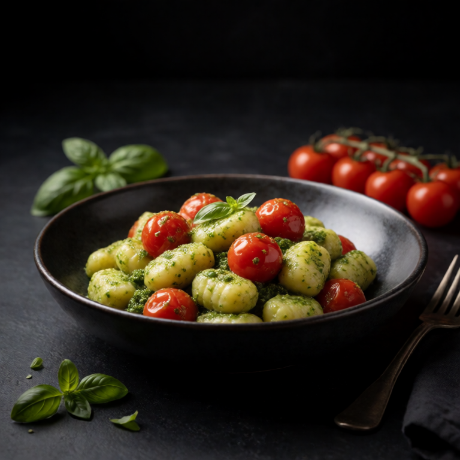

Recipe collection
Vegetarian Recipes for One
This collection leans on beans, eggs, cheese, vegetables, noodles, and grains. The point is not to imitate a meat-centered dinner. It is to build something satisfying from ingredients that already taste good together.
20 recipes in this collection


A better starting point
Build flavor without extra work
- Brown mushrooms, toast bread, and let cheese take on color whenever the recipe allows it.
- Use beans, eggs, yogurt, tofu, or cheese to give a light meal more staying power.
- Finish with acid and texture. Lemon, vinegar, pickles, seeds, and toasted nuts do a lot.
Common questions
Are these vegetarian recipes complete meals?
Yes. Each recipe stands on its own as dinner for one, leaning on eggs, beans, cheese, tofu, vegetables, noodles, and grains.
Will these work for beginner cooks?
Most methods take a handful of steps and familiar ingredients. Where a step matters, the recipe describes what success looks like.
Where does the flavor come from without meat?
Browning, acid, brine, and texture. Mushrooms get browned, pickles and lemon sharpen rich ingredients, and toasted nuts or seeds finish the plate.